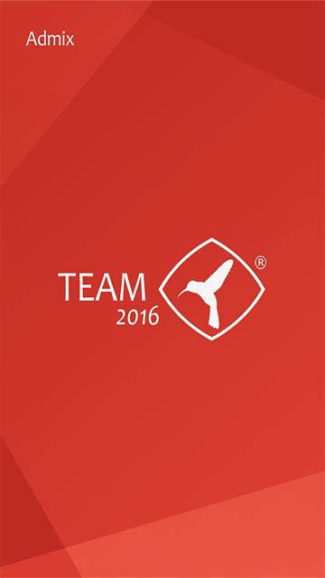

<!DOCTYPE html>
<html>
    <head>
        <!-- Required meta tags-->
        <meta charset="utf-8">
        <meta name="viewport" content="width=device-width, initial-scale=1, maximum-scale=1, minimum-scale=1, user-scalable=no, minimal-ui">
        <meta name="apple-mobile-web-app-capable" content="yes">
        <!-- Color theme for statusbar -->
        <meta name="theme-color" content="#2196F3">
        <!-- Your app title -->
        <title>My App</title>
        <!-- Path to Framework7 Library CSS, Material Theme -->
        <link rel="stylesheet" href="css/framework7.material.min.css">
        <!-- Path to Framework7 color related styles, Material Theme -->
        <link rel="stylesheet" href="css/framework7.material.colors.min.css">
        <!--la llamada de estos styles se realiza desde el myapp.js-->
        <!--<link rel="stylesheet" href="css/framework7.ios.min.css">-->
        <!-- Path to Framework7 color related styles, Material Theme -->
        <!--<link rel="stylesheet" href="css/framework7.ios.colors.min.css">-->
        <!-- Path to your custom app styles-->
        <link rel="stylesheet" href="css/index.css">
        <link rel="stylesheet" href="css/iniciotabs.css">
        <link rel="stylesheet" href="css/registrodisp.css">
        <link rel="stylesheet" href="css/login.css">
        <link rel="stylesheet" href="css/registrodispcad.css">
        <link rel="stylesheet" href="css/agregarreg.css">
        <link rel="stylesheet" href="css/detalleeventos.css">
        <link rel="stylesheet" href="css/calendarioeventos.css">
        <link rel="stylesheet" href="css/eventosdetalle.css">
        <link rel="stylesheet" href="css/usuarios.css">
        <link rel="stylesheet" href="css/settings.css">
    </head>
    <body id="bodyindex" background="img/splash/TEAM360x640.png">
        <!-- Views -->
        <div class="views">
            <!-- Your main view, should have "view-main" class -->
            <div class="view view-main" >
                <!-- Pages container, because we use fixed navbar and toolbar, it has additional appropriate classes-->
                <div class="pages  ">
                    <!--<div class="pages navbar-fixed toolbar-fixed">-->
                    <!-- Page, "data-page" contains page name -->
                    <div data-page="index" class="page">
                        <!-- Top Navbar. In Material theme it should be inside of the page-->
                        <!-- Bottom Toolbar. In Material theme it should be inside of the page-->
                        <!-- <div class="toolbar">
                            <div class="toolbar-inner">
                                Toolbar links
                                <a href="#" class="link">Link 1</a>
                                <a href="#" class="link">Link 2</a>
                            </div>
                        </div>-->
                        <!-- Scrollable page content -->
                        <div id="indexpage-content" class="page-content" >
                            <!-- Click <a href="#detailsPage">here</a> to go to page 2-->
                            <div id="logoadmix">
                                <!---->
                            </div>
                        </div>
                    </div>
                </div>
            </div>
        </div>
        <!-- jquery -->
        <script src="//code.jquery.com/jquery-1.10.2.js"></script>
        <!-- Path to Framework7 Library JS-->
        <script type="text/javascript" src="js/framework7.min.js"></script>
        <!-- Path to your app js-->
        <script type="text/javascript" src="js/my-app.js"></script>
        <!-- Path to cordova device name-->
        <!--<script type="text/javascript" src="js/device-name.js"></script> -->
    </body>
</html>